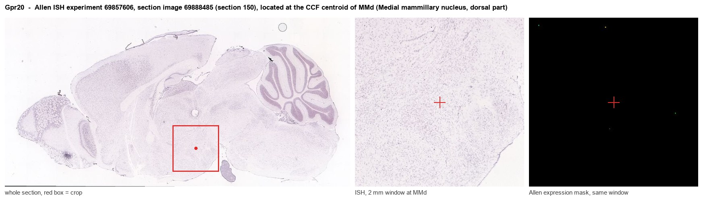

Gpr20
G protein-coupled receptor 20
Spatial tier: REGION_BIASED · Class: GPCR · Top region: MMd (Medial mammillary nucleus, dorsal part) · Positive regions: 29/554
46.9Discovery Score
35.0Targetability Score
CEvidence grade C
What this means: Gpr20: fine CCF profile is region-biased toward MMd (top regions: MMd, CLI, IG, AMBd, SSp-m1); this is a discovery lead, not direct proof.
Function in MMd: evidence, prediction, innovation
- Gene function
- GPR20 is an orphan class A G protein-coupled receptor most closely related to the opioid/somatostatin receptor cluster. It couples constitutively to Gi/o, lowering cAMP without any identified ligand, and is best known clinically as a surface antigen of gastrointestinal stromal tumours and interstitial cells of Cajal.
- Region function
- The medial mammillary nucleus is the hypothalamic node of the Papez/extended hippocampal circuit: it receives subicular input via the fornix and projects through the mammillothalamic tract to the anterior thalamic nuclei, supporting theta-paced spatial and episodic memory.
- Published in this region
- none No region-specific literature found. The only CNS data are from the original cloning paper: O'Dowd 1997 detected GPR20 transcripts by Northern blot in several human brain regions (and liver), with no nucleus-level resolution.
- Predicted function
- Prediction: as a constitutively active Gi-coupled receptor, GPR20 in dorsal medial mammillary neurons would set a tonic brake on adenylyl cyclase and therefore on HCN/Ih and cAMP-dependent burst firing, biasing these cells towards regular theta-locked discharge. Knockdown or a Gi-DREADD comparison should raise baseline cAMP and firing rate in mammillary neurons; behaviourally this predicts altered mammillothalamic theta coupling and mild spatial-memory changes. Deorphanisation in this nucleus is itself the first experiment.
- Innovation
- ★★★★★ 5/5 A completely unstudied orphan receptor in a classic but molecularly under-characterised memory nucleus.
- Tools
- No selective ligand exists; anti-GPR20 antibodies and the GPR20-directed antibody-drug conjugate DS-6157a provide binding reagents; conditional knockdown via AAV-shRNA or CRISPR in Foxb1-Cre mice.
- References
Direct evidence located at the region

Allen ISH experiment 69857606, section image 69888485 (section 150): the section that contains the CCF centroid of Medial mammillary nucleus, dorsal part according to the Allen image-to-atlas alignment (reference_to_image), with a 2 mm window around that point. Left: whole section, red box = window. Middle: ISH signal. Right: Allen's expression-mask view of the same window. open this image in the Allen viewer
Look it up yourself: Allen Mouse Brain ISH for Gpr20Allen reference atlas: MMd (structure 606826659)ABC Atlas MERFISH viewer(in the ABC Atlas choose dataset MERFISH-C57BL6J-638850-CCF, colour cells by gene "Gpr20" or by parcellation_substructure "MMd")All genes confined to MMd + 3-D brain
Direct spatial evidence
MERFISH REGION LOCATOR

Regional expression figure

Predicted WMB × fine-CCF profile; not direct full-transcriptome spatial measurement.
Spatial profile
Evidence and specificity
- Evidence status
- PREDICTED_FINE
- Direct sources
- None; predicted localization only
- Exclusive threshold
- 12 positive regions out of 554
- Spatial specificity
- 0.282
- Top-region fraction
- 0.053
- Filter status
- PASS
Interpretation limits
- Cell-type-to-region projection is imputed expression, not direct spatial measurement.
- Adult reference atlases do not establish stability across age, sex, strain, state, or disease.
- Transcript abundance does not guarantee protein abundance or genetic-tool performance.